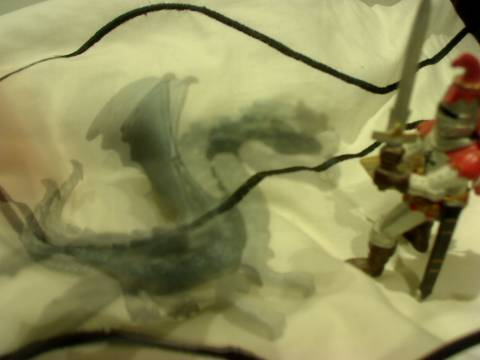
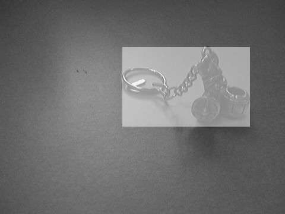
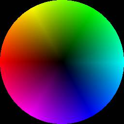
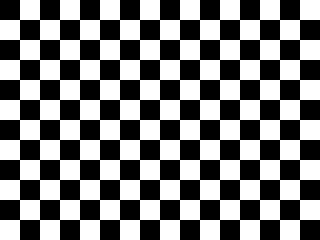
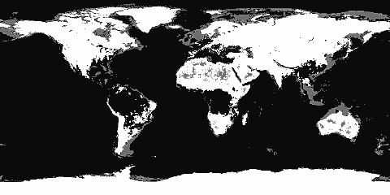
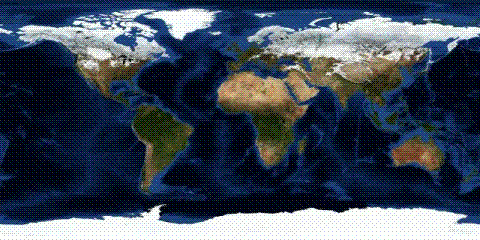

Histograms and Warps
Histogram Equalisation
Using integral arrays and element-wise lookup (map) one can implement histogram equalisation.
require 'hornetseye_openexr'
require 'hornetseye_xorg'
include Hornetseye
class Node
def average
sum / size
end
def equalise( n = 4096, c_max = 255 )
if typecode < RGB_
result = MultiArray(typecode, dimension).new *shape
max_average = [ r, g, b ].collect { |c| c.average }.max
result.r, result.g, result.b = *[ r, g, b ].collect do |c|
c.equalise n, c_max * c.average / max_average
end
result
else
quantised = normalise( 0 .. n - 1 ).to_int
quantised.lut quantised.histogram( n ).integral.normalise( 0 .. c_max )
end
end
end
system 'wget -c http://www.wedesoft.de/hornetseye-api/images/bmw.exr'
img = MultiArray.load_sfloatrgb 'bmw.exr'
img.equalise.show
Otsu Thresholding
The Otsu algorithm is an algorithm for automatic thresholding. The algorithm assumes that the image to be thresholded contains two classes of pixels and then chooses the threshold which minimizes the intra-class variance of the two classes defined by the resulting binary image. Otsu has reformulated this problem so that it can be computed efficiently with histograms.
require 'hornetseye_rmagick'
require 'hornetseye_xorg'
include Hornetseye
class Node
def otsu( hist_size = 256 )
h = histogram hist_size
w1 = h.integral
w2 = w1[ w1.size - 1 ] - w1
s1 = lazy { |i| h[i] * i }.integral
s2 = sum - s1
m1 = w1 > 0
u1 = ( s1.mask( m1 ).to_sfloat / w1.mask( m1 ) ).unmask m1
m2 = w2 > 0
u2 = ( s2.mask( m2 ).to_sfloat / w2.mask( m2 ) ).unmask m2
between_variance = ( u1 - u2 ) ** 2 * w1 * w2
self > argmax { |i| between_variance[i] }.first
end
end
img = MultiArray.load_ubyte 'http://www.wedesoft.de/hornetseye-api/images/lena.jpg'
( img.otsu.to_ubyte * 255 ).show
Compute Average

This example shows how to compute the average of a series of frames. You can use a program like this to reduce noise by averaging a large number of frames.
require 'hornetseye_v4l2'
require 'hornetseye_xorg'
include Hornetseye
input = V4L2Input.new
average = nil
c = 0
img = X11Display.show do
img = input.read_ubytergb
average = average.nil? ? img.to_uintrgb : average + img
c += 1
average / c
end
img.show
Bounding Box

A mask which specifies pixel locations of interest is created. The mask then is applied to an x-ramp and a y-ramp to find the bounding box. The area outside the bounding box finally is highlighted.
require 'hornetseye_rmagick'
require 'hornetseye_xorg'
include Hornetseye
img = MultiArray.load_ubyte 'http://www.wedesoft.de/hornetseye-api/images/viking.jpg'
mask = img <= 50
x = lazy( *img.shape ) { |i,j| i }
y = lazy( *img.shape ) { |i,j| j }
box = [ x.mask( mask ).range, y.mask( mask ).range ]
img[ *box ] = img[ *box ] / 2 + 0x7F
img.show
Warps
Images can be warped using vector fields. The warp vectors are indicating the location of the source pixel. The example warps an equirectangular projection to an azimuthal projection.
require 'hornetseye_rmagick'
require 'hornetseye_xorg'
include Hornetseye
img = MultiArray.load_ubytergb 'http://www.wedesoft.de/hornetseye-api/images/world.jpg'
w, h = *img.shape
c = 0.5 * h
x, y = lazy( h, h ) { |i,j| i - c }, lazy( h, h ) { |i,j| j - c }
angle = ( Math.atan2( x, y ) / Math::PI + 1 ) * w / 2
radius = Math.hypot( x, y )
img.warp( angle.to_int, radius.to_int ).show
Colour Circle

You can create images yourself. In this example an image with different colours is generated and the result is mapped to a circle using a vector-field.
require 'hornetseye_xorg'
include Hornetseye
img = MultiArray.ubytergb( 360, 128 ).fill!
x, y = lazy( *img.shape ) { |i,j| i }, lazy( *img.shape ) { |i,j| j }
img.r = ( ( ( x - 180 ).abs - 60 ).clip( 0..60 ) * y ).normalise
img.g = ( ( 120 - ( x - 120 ).abs ).clip( 0..60 ) * y ).normalise
img.b = ( ( 120 - ( x - 240 ).abs ).clip( 0..60 ) * y ).normalise
w, h = 256, 256
x, y = lazy( w, h ) { |i,j| i - 127.5 }, lazy( w, h ) { |i,j| j - 127.5 }
angle = Math.atan2( y, x ) * 180.0 / Math::PI + 179.5
radius = Math.hypot( y, x )
img.warp( angle.to_int, radius.to_int ).show
Chequerboard

Index arrays can be used to create patterns. The following example shows how one can create a chequerboard pattern using modulo, division without remainder, exclusive-or, and multiplication.
require 'hornetseye_xorg'
include Hornetseye
checker = finalise( 320, 240 ) do |i,j|
( ( ( i / 20 ) % 2 ) ^ ( ( j / 20 ) % 2 ) ) * 0xFF
end
checker.show
Histogram Segmentation

This is an implementation of histogram inversion. Here a ratio-histogram of the target (land) and the background (water) is computed. Histogram inversion is used to highlight the areas of the image which are considered to be land.
require 'hornetseye_rmagick'
require 'hornetseye_xorg'
include Hornetseye
div = 0x40
size = 0x100 / div
img = MultiArray.load_ubytergb 'http://www.wedesoft.de/hornetseye-api/images/world.jpg'
land = img[ 455 ... 525, 32 ... 116 ]
water = img[ 33 ... 133, 172 ... 272 ]
land_hist = ( land / div ).histogram( size, size, size ).to_int
water_hist = ( water / div ).histogram( size, size, size ).to_int
mask = ( land_hist + water_hist ) > 0
quot = ( ( land_hist - water_hist ).mask( mask ).to_dfloat /
( land_hist + water_hist ).mask( mask ) ).unmask mask
( img / div ).lut( quot ).normalise.show
Ordered Dithering

+----+----+----+----+----+----+----+----+
| 0 | 32 | 8 | 40 | 2 | 34 | 10 | 42 |
+----+----+----+----+----+----+----+----+
| 48 | 16 | 56 | 24 | 50 | 18 | 58 | 26 |
+----+----+----+----+----+----+----+----+
| 12 | 44 | 4 | 36 | 14 | 46 | 6 | 38 |
+----+----+----+----+----+----+----+----+
| 60 | 28 | 52 | 20 | 62 | 30 | 54 | 22 |
+----+----+----+----+----+----+----+----+
| 3 | 35 | 11 | 43 | 1 | 33 | 9 | 41 |
+----+----+----+----+----+----+----+----+
| 51 | 19 | 59 | 27 | 49 | 17 | 57 | 25 |
+----+----+----+----+----+----+----+----+
| 15 | 47 | 7 | 39 | 13 | 45 | 5 | 37 |
+----+----+----+----+----+----+----+----+
| 63 | 31 | 55 | 23 | 61 | 29 | 53 | 21 |
+----+----+----+----+----+----+----+----+
This example demonstrates dithering using a Bayer matrix. Dithering is most commonly used for displaying images on hardware with a low colour depth. The algorithm modifies the input values using an index matrix before quantising them.
require 'hornetseye_rmagick'
require 'hornetseye_xorg'
include Hornetseye
class MultiArray
class << self
def bayer(lsize)
n = 1 << lsize
idx = MultiArray(INT, 2).indgen n, n
result = MultiArray.int(n, n).fill!
m = Sequence[0, 2, 3, 1].to_int
for i in 0 ... lsize
q = idx.bit(i) | idx.bit(i + lsize) << 1
result |= q.lut(m) << ((lsize - i - 1) << 1)
end
result
end
end
end
class Node
def bit( i )
(self & (1 << i)) >> i
end
def dither(lsize = 4)
if typecode < RGB_
result = MultiArray(typecode, dimension).new *shape
result.r, result.g, result.b = [r, g, b].collect do |c|
c.dither lsize
end
result
else
bayer = MultiArray.bayer lsize
x = lazy(*shape) { |i,j| i & ((1 << lsize) - 1) }
y = lazy(*shape) { |i,j| j & ((1 << lsize) - 1) }
msk = (1 << lsize) ** 2 - 1
(self & msk <= bayer.warp(x, y)).conditional self & ~msk, self | msk
end
end
end
img = MultiArray.load_ubytergb 'http://www.wedesoft.de/hornetseye-api/images/world.jpg'
img.dither(3).show
See Also
- Hornetseye#lazy
- Hornetseye#finalise
- Hornetseye::Node#lut
- Hornetseye::Node#histogram
- Hornetseye::Node#integral
- Hornetseye::Node#mask
- Hornetseye::Node#warp